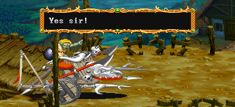
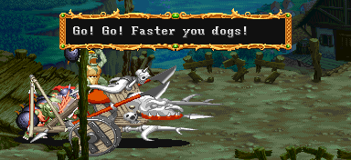
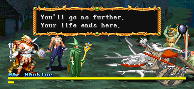
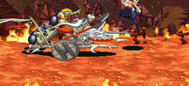
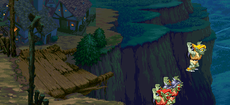

트린턴 마을(스테이지 2) 보스 '워 머신' |
기본 정보
클리어 시간 측정의 시작 시점
고블린 대장(노란 모자)이 마지막 대사를 최단 시간 클리어 기록
엘프 - 4:53 |
|||||||||
그러나 공략법을 모른다면 상당히 고전 할 수 있는 나름대로 까다로운 보스다.
다른 적들과는 패턴이 많이 다른 편이며 또한 공격방법도 약간 달리 해야 되기 때문이다.
"네놈들이 감히 우리에게 대적을 해!? 오너라 나의 전사들이여!!"

"예써!"

"더 빨리 움직여 개자식들아!"

"네놈들은 더이상 가지 못한다. 늬들 목숨은 여기서 끝이다."

마을 사람들을 괴롭히는 것도 모자라 불까지 지른다. 정말 민폐다.
클레릭/드워프는 파이터에 가까운 데미지를, 시프/엘프는 매직 유저에 가까운 데미지를 입는다.
돌진 (평균 데미지:20/30)
교블린 4마리가 뒤에서 밀면서 돌진을 한다. 돌진을 하면서 화면을 가로질러 왕복하는게 움직임의 전부라고 할 수 있다.
그러나 앞부분에 날카로운 창이 달려있기 때문에 부딪치기만 해도 데미지를 입으며 쓰러진다.
그냥 돌진하는 것 만이 아니라 갑자기 멈춰서서 다른 공격을 하기도 한다.
뒤에서 밀어주는 고블린의 숫자가 적을 수록 돌진속도는 느려지며 4마리를 전부 처치했다면 새로운 고블린들이 보충되는데 그 동안 워머신은 멈춰있게 된다. 그러나 1마리라도 남아서 화면밖까지 돌진을 했다면 다시 등장 할 때는 고블린들이 전부 보충 되서 나온다 (가끔 아닌 경우도 있긴 하다).
돌진 중에 4번 타격을 하게 되면 공격 판정이 잠시 사라진다. 또한 가드가 가능하다.
이점을 잘 이용하면 돌진 중인 워머신을 효과적으로 제압 할 수 있다.
투석 (평균 데미지:18/27)
돌진을 멈춘 다음 앞의 머리 부분이 열리면서 큼지막한 돌덩이를 투척한다.
열리는 모습이 뻔히 보이고 또한 궤도가 어정쩡해서 맞을일은 별로 없는 공격이다.
판정범위가 넓지 않기 때문에 위아래로 살짝만 피해줘도 되며 또한 가드가 가능하다.
거리에 따라 간혹 가드가 안되는 경우가 있으니 위아래로 피하는 것을 추천.
워 머신의 hp가 거의 바닥나면 머리 부분이 깨지는데 그때부터는 발동하지 않는다.
화염방사 (평균 데미지:23/34)
위의 공격과 비슷하게 돌진을 멈춘 다음 앞의 머리 부분이 열리면서 불길을 내뿜는다.
발동속도가 빠르지는 않지만 돌진을 막기 위해 방어자세를 하고 넋놓고 있다가 맞는 경우도 있다.
위아래로 이동하면서 내뿜는 경우도 있다. 이럴 때는 맨위나 아래에서 점프를 해주면 된다.
워 머신의 모든 공격 중 데미지가 가장 강력하다.
위 공격과 마찬가지로 워 머신의 hp가 거의 바닥나면 머리 부분이 깨지는데 그때부터는 발동하지 않는다.
찌르기 (평균 데미지:18/27)
앞부분의 두개의 창이 갑자기 늘어나면서 찌른다. 가드가 가능 하지만 속도가 제법 빠르기 때문에 방심하면 맞을 수 있다. 대체로 두번 이상 찌르며 위 아래로 이동하면서 찌르는 경우도 있다.
워머신이 데미지를 많이 입어 창이 부러진 상태에선 발동하지 않는다.
시작과 동시에 고블린 1마리가 오른쪽에서 뛰쳐 나온다. 시간이 조금 흐르면 왼쪽에서 1마리가 더 뛰쳐 나오며 2마리를 다 해치우면 다시 시간차를 두고 한마리씩 총 2마리가 나온다. 이 패턴을 계속 반복해서 최대 10마리까지 나온다.
* (최초 고블린 → 고블린x1) 이후 (고블린x1 → 고블린x1) 4회 반복
시작과 동시에 1마리의 고블린이 나오는 것은 같다. 이 고블린을 처리 했을 때 1인 플레이 처럼 시간차를 두고 한마리씩 총 2마리가 나온다. 이들을 처리 했다면 이번엔 오른쪽에서 3마리가 오일을 던지고 도망가고 바로 이어서 왼쪽에서 3마리가 오일을 던지고 도망간다. 그 후엔 '두마리→오일 투척'의 패턴을 최대 5회까지 반복한다. 오일 투척 고블린을 제외하면 최대 11마리가 나온다.
* 최초 고블린 이후 (고블린x1 → 고블린x1) → (왼쪽 오일 투척x3 → 오른쪽 오일 투척x3) 5회 반복
2인 플레이와 거의 같은데 (고블린x2)부분에서 고블린 두마리가 동시에 나온 후 시간차를 두고 한마리가 더 나온다는 점이 다르다. 화면상에 최대 3마리의 고블린들이 돌아다닐 수 있다는 뜻. 오일 투척 고블린을 제외하면 최대 16마리가 나온다.
* 최초 고블린 이후 (고블린x2 → 고블린x1) → (왼쪽 오일 투척x3 → 오른쪽 오일 투척x3) 5회 반복
| 전체 hp의 29%정도의 피해를 입었을 경우 아래쪽에 비스듬하게 걸린 창이 부러진다. | 전체 hp의 38%정도의 피해를 입었을 경우 위쪽 창도 부러진다. |
| 전체 hp의 53%정도의 피해를 입었을 경우 깃대가 부러진다. |
전체 hp의 66%정도의 피해를 입었을 때 위쪽 전면의 창이 휘어진다. 이때부터 돌진시의 공격범위가 줄어든다. |
| 전체 hp의 75%정도의 피해를 입었을 때 아래 쪽 전면의 창이 부러진다. 돌진시의 공격범위는 더욱 줄어든다. |
전체 hp의 89%정도의 피해를 입으면 머리부분이 부서진다. |
◎ 자리 잡기
일단은 뒤에서 미는 4마리의 고블린을 얼마나 효율적으로 처리하느냐가 관건이다.
고블린들을 잘 처리하기 위해선 처음부터 자리를 잘 잡는게 중요하다. 붉은 동그라미 안에 보이는 자갈 무더기를 기준점으로 삼아서 서 있으면 한번의 공격으로 고블린들을 한꺼번에 잡을 수 있다.
◎ 판정
그 다음은 판정 범위에 대해 알아 둘 필요가 있다. 붉은 선을 기준으로 뒷부분을 공격 할 경우 앞쪽으로 밀려난다. 반면에 그 앞부분을 공격 할 경우 뒤쪽으로 밀려난다. 중요한 사실은 공격방향은 전혀 상관이 없다는 점이다. 즉, 뒤쪽에서 앞부분을 공격하면 플레이어 쪽으로 워머신이 당겨진 다는 점이다. (돌진시의 데미지 판정 범위도 위와 같다.)
또한 워 머신은 피격 판정(맞는 판정)의 회복 속도가 느리다. 좀 더 자세히 말하면 공격이 명중 한 후 다음 공격을 명중 시키는데 필요한 시간이 꽤 걸린다는 뜻이다. 이것은 일정 속도 이상의 빠른 공격은 그다지 효과적이지 못하다는 것을 뜻한다. 따라서 공격간의 적절한 타이밍을 익혀야 한다.
뒤에서 미는 고블린들의 판정도 마찬가지다. 일반 고블린들 처럼 때리는 대로 맞아주지 않는다.
◎ 오일의 활용
이런 이유로 오일이 아주 효과적이다. 오일은 지속시간이 있고 워 머신은 쓰러지지 않기 때문에 한번 투척으로 2~3히트가 가능하기 때문이다. 또한 오일이 히트하는 시기를 잘 맞춰서 공격을 하면 공격이 중첩해서 맞기 때문에 더 많은 데미지를 입힐 수 있다.
※ 워 머신을 미는 고블린들도 죽을 때 마다 1~2sp씩 떨군다. 그래서 싸우다 보면 바닥에 1sp들이 많이 쌓이게 되고 A공격을 하려다 보면 돈을 줍다가 워머신을 놓치고 공격을 당할 가능성이 상당히 크다. 그래서 고블린들이 워머신의 반대방향으로 쓰러지도록 공격방향을 잘 잡아서 1sp 무더기가 워머신 쪽으로 쌓이지 않도록 하는 것도 중요하다.
"네놈들은 이 공격에서 살아남지 못한다."

"깔아 뭉개버려!!"

그러나 플레이어 캐릭터들은 점프로 피한다.

"어?"

"으악 워머신이!"

워머신과 고블린들은 추락을 하고 이번 스테이지는 마무리 된다.